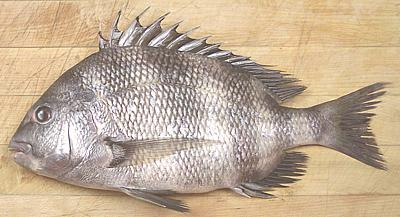

Sheepshead Seabream

[Sheepshead (fishbase); Sargo (Spanish, Portuguese);
Archosargus probatocephalus]
Found along the West Atlantic from Nova Scotia around along the
northern coast of the Gulf of Mexico, this fish is not found around
the Caribbean islands. It can grow to almost 36 inches and 21 pounds
but the photo specimen was 12-1/2 inches and weighed 1-1/2 pounds.
It's an ocean fish but it freely enters brackish water and
sometimes even fresh water. It is considered an excellent eating
fish and fished commercially, but is not threatened.
More on Porgy / Seabream Family.
This is a medium flavored fish which I prefer fried with a light
powdering of rice flour. I find the flavor less suitable for wet cooking,
and in any case the flesh is too tender for poaching.
Buying:
This is a West Atlantic and Caribbean fish, but
occasionally shows up in the Asian fish markets here in Southern
California.
Scales:
This fish is completely covered with large
scales with moderate adhesion. They're not difficult to scrape off but
they will fly around a bit as you scrape them.
Cleaning:
This presents no particular problems.
Skin:
The skin shrinks a lot when fried but doesn't
adhere tightly so it shrinks without distorting the fillet. The skin
does have a noticeably stronger flavor than the flesh.
Fillet:
This is an easy enough fish to fillet, with
plenty of fin rays and bones for the knife to follow. The rib cage,
however, turns out sharply from the backbone and is difficult to follow.
Just cut the ribs from the backbone with kitchen shears and pull them
from the fillet. The ribs pull out easily and cleanly. There's a row of
very substantial centerline pin bones for the front half of the fish.
Feel them out and pull them straight forward with your long nose pliers.
Yield:
Yield is moderate with a 1.5 pound fish yielding
9.7 ounces skin-on (40%) and 7.9 ounces skinless (33%). The low yield
results from the fish's heavy bone structure, what you would expect in
a fish that makes it's living grinding up mollusks and crustaceans.
Stock:
The head, fins and bones make a stock that has a
rather "fishy" flavor which I don't particularly like.
sf_sheepbz 061231 - www.clovegarden.com
©Andrew Grygus - agryg@clovegarden.com - Photos
on this page not otherwise credited © cg1
- Linking to and non-commercial use of this page permitted